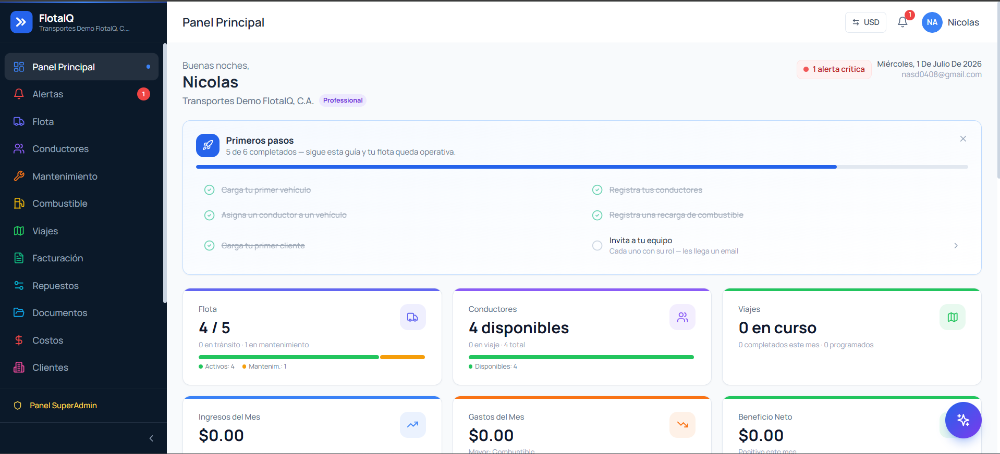
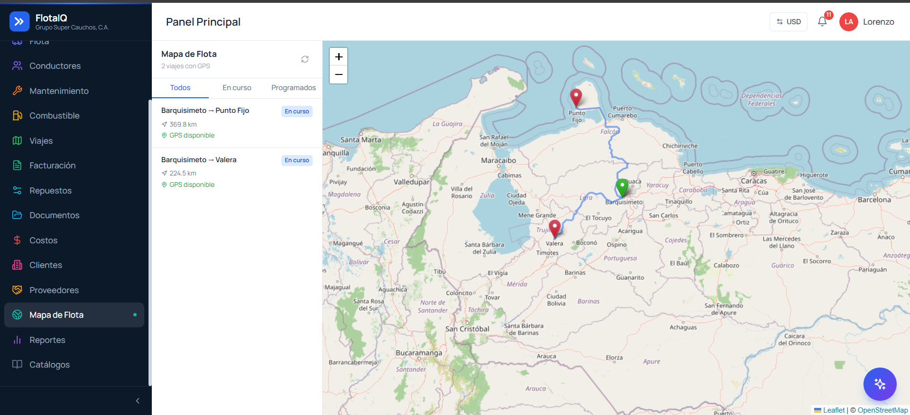
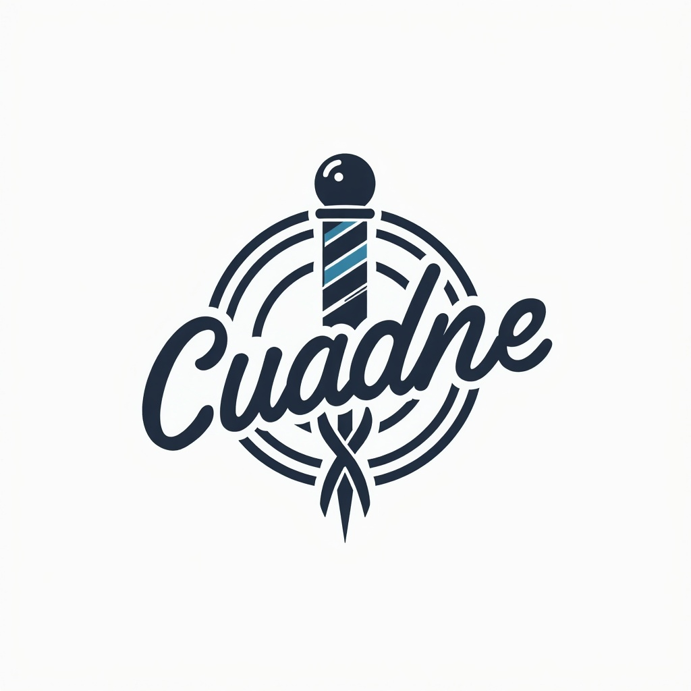
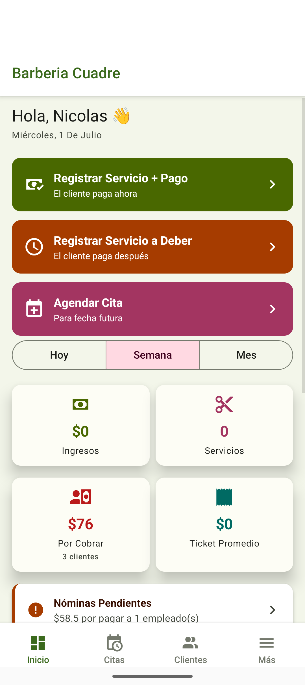
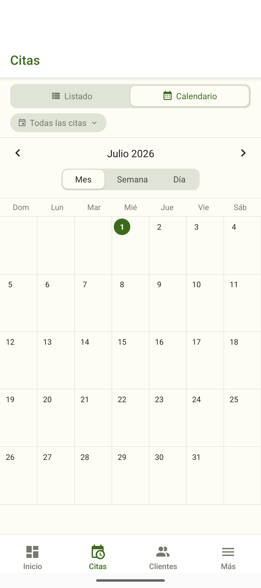
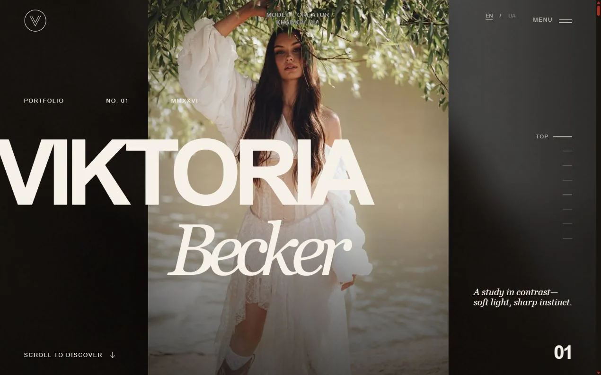
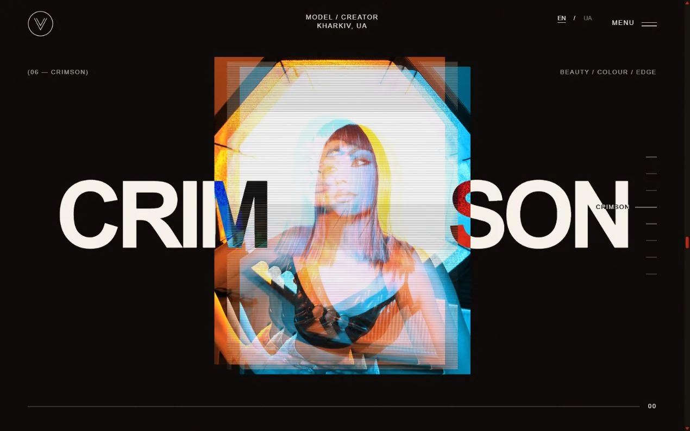
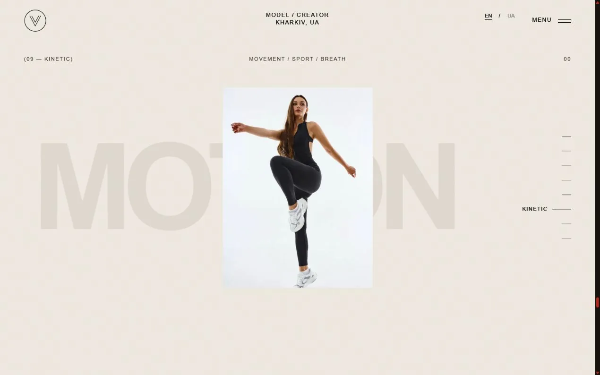

02
Selected systems
Scroll to explore
Built end to end.
Running for real.
01 / FlotaIQ
02 / CuadreAPP
I turn operational complexity into useful products. Backend development with C#/.NET and SQL, with full-stack experience to take an idea all the way to production.
Explore workThe most useful software disappears into the work: it keeps data clean, decisions fast and teams moving.
I work across product, frontend, backend, infrastructure and data—the whole path from a business problem to a deployed system.
Scroll to explore
A fleet platform with .NET and PostgreSQL: tenant isolation, trips, maintenance, fuel and billing. Real-time alerts with SignalR and a React interface.



A .NET backend for appointments, clients, debts, payroll and reporting. A React Native app with offline-first synchronization brings it to beauty professionals.


Written entirely in Python. Running in the browser.
Every comparison plays a note pitched by the value it touched: noise while the array is unsorted, a scale as it resolves. The second module does the same with route search over real OpenStreetMap cities.
The algorithm runs to completion before the first frame is painted. Playback is a cursor moving over that list—so stepping backwards is O(1), and picture and sound stay in sync by construction.
Notes are queued ahead on the AudioContext clock instead of on the animation frame: a few milliseconds of frame jitter are heard as arrhythmia. A pentatonic scale keeps twenty simultaneous notes consonant.
A build step queries Overpass, prunes the degree-two nodes that carry no shape, and versions the result. Every edge weight is at least the straight line, which is what keeps the A* heuristic admissible.
Viktoria Becker — an editorial portfolio where photography, typography and motion share the stage. A side project to explore what an interface can feel like.
Explore the website


A rhythm game built with Godot
You are Norway's drum at the Rowing World Championship. Conduct the crowd or row the longship—everything is controlled by the swing.
Engineering shaped by ownership, not narrow job descriptions.
Agile Check · Remote
Building compliance software across C#/.NET, Angular and SQL Server; deploying multi-client environments in IIS and supporting on-premise installations for financial institutions.
ChicksGroup · Remote, Canada
Designed Cypress end-to-end suites for critical user journeys, catching failures earlier and reducing production risk.
Grupo Super Cauchos · Venezuela
Owned IT for a 30-person company: business intelligence, internal tools, ERP continuity and vendor operations. Power BI dashboards contributed to 14% month-over-month sales growth across roughly $500K in monthly flow.
Reliable software is a chain. Every layer needs to hold.
Flows shaped around real operations—not feature lists.
React · Angular · TypeScript · React Native
.NET · REST APIs · JWT · SignalR · Cypress
PostgreSQL · SQL Server · IIS · DigitalOcean
A working stack, not a trophy shelf—what I use to design, build, test and run real systems.
Also at home in Odoo & SAINT ERP operations · SUSCERTE 2023 — computer forensics & cybersecurity fundamentals
Not vanity metrics. A few concrete signs that the systems moved beyond the screen and into the business.
Power BI dashboards connected operational data to decisions and supported a 14% month-over-month sales increase.
Two complete multi-tenant products designed, engineered and deployed from end to end.
My first public mobile product crossed 100 Play Store downloads.
I’m an Informatics Engineer focused on backend development with C#/.NET and SQL. I enjoy understanding how a business really works, then building the systems that make it simpler.
My path through IT leadership, data analysis, QA automation and full-stack development gave me a useful bias: I think beyond the ticket. I care whether the whole system works for the people depending on it.
Have a system to build, a product to strengthen or a difficult problem worth solving?